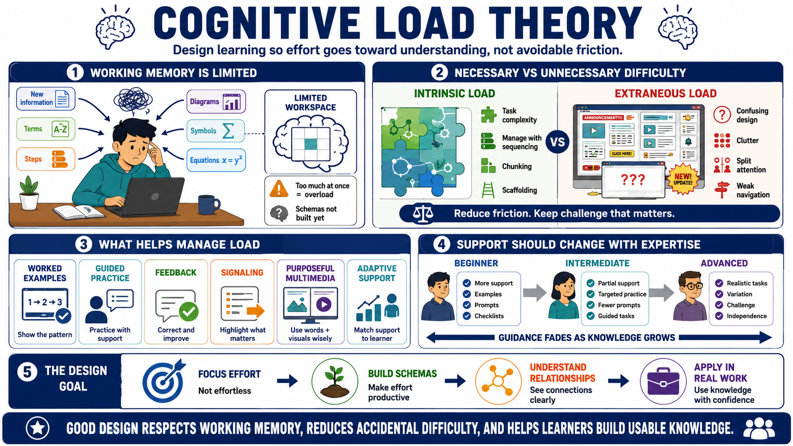

Course Summary and Key Takeaways
Connecting to LMS... Progress: in progress

Narration
Cognitive Load Theory helps designers build learning experiences that respect working memory limits. Learners can only process so much new information at once, especially when they lack schemas for the domain. Strong design supports the movement from limited working memory activity to organized long-term knowledge that learners can retrieve and use.
A major takeaway is to distinguish necessary difficulty from unnecessary difficulty. Intrinsic load comes from the task itself and must be managed through sequencing, chunking, scaffolding, and progressive complexity. Extraneous load comes from confusing or inefficient instruction and should be reduced wherever possible. Productive mental effort should go toward understanding, schema building, and skill development.
Worked examples, guided practice, feedback, signaling, purposeful multimedia, and adaptive support all help manage load. Beginners often need more structure. As learners gain expertise, guidance should fade and practice should become more varied and realistic. The design should evolve as the learner's knowledge changes.
The goal is not to make learning effortless. Effort is part of learning. The goal is to make effort focused, productive, and connected to real understanding and performance. When instruction respects cognitive load, learners are more likely to see the important relationships, build usable schemas, and carry the skill back into real work.